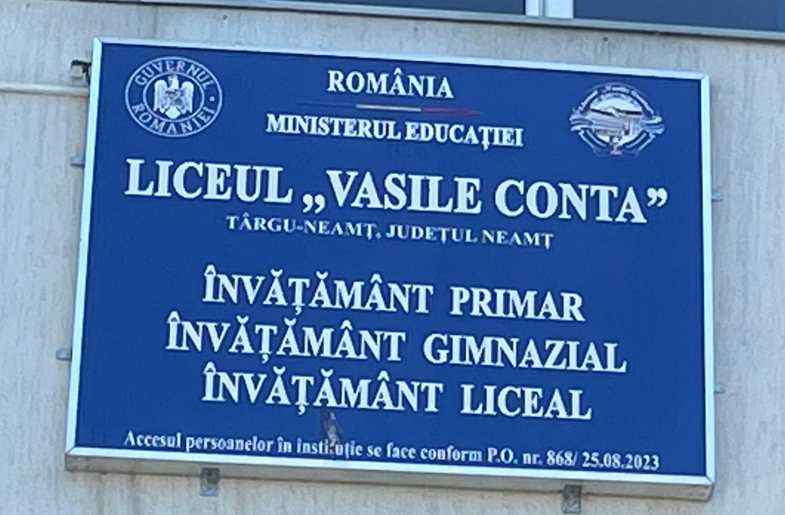
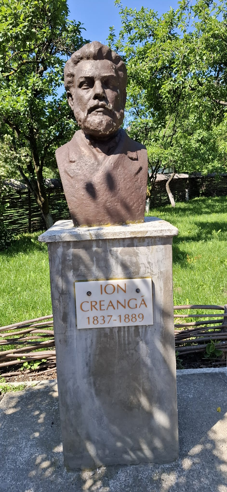

Découverte du lycée


Photo de classe avec les correspondants roumains

Accueil des élèves français par la proviseure


Visite de la maison de l'écrivain "Ion GREANGÁ"



Visite d'un musée sur la région et ses traditions